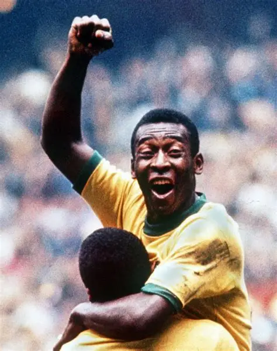

Brasil es la selección más exitosa en la historia de la FIFA World Cup, con 5 títulos mundiales obtenidos en 1958, 1962, 1970, 1994 y 2002.
A lo largo de los años, Brasil ha contado con leyendas del fútbol como Pelé, único jugador con tres Copas del Mundo, además de figuras históricas como Ronaldo Nazário, Ronaldinho y Neymar.
La selección brasileña es famosa por su estilo de juego ofensivo, técnico y espectacular, conocido como “jogo bonito”. También es la única selección que ha participado en todas las ediciones del Mundial.
Brasil protagonizó partidos históricos y dejó una huella imborrable en el fútbol mundial gracias a su talento, creatividad y tradición campeona.
Pelé fue un futbolista brasileño considerado por muchos como el mejor de la historia. Ganó 3 Copas del Mundo con Brasil (1958, 1962 y 1970), un récord único. Jugó principalmente en Santos FC y destacó por su gran capacidad goleadora, velocidad y habilidad. Su influencia ayudó a popularizar el fútbol en todo el mundo, convirtiéndolo en una de las mayores leyendas del deporte.
